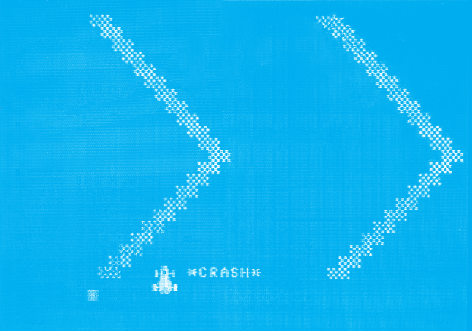

Fahrsimulator
Es handelt sich um ein Spiel, bei dem schnellste Reaktionen gefordert werden. Ihre Aufgabe besteht darin, ein Fahrzeug ohne »Crash« ins Ziel zu lenken. Die Steuerung erfolgt über die Tastatur oder mit einem Joystick.
Die Fahrbahnbreite und die Geschwindigkeit können in je fünf Stufen (von »Anfänger« bis »Selbstmörder«) gewählt werden.
Nach Spielende wird Ihre Gesamtpunktzahl, die von dem gewählten Schwierigkeitsgrad und der Anzahl Ihrer »Crashs« abhängt, angezeigt.
Wer nach der Lektüre dieser Beschreibung glaubt, die Sache sei einfach, dem sei wärmstens empfohlen, nur einmal die Stufe für Anfänger auszuprobieren. (Ein kleiner Trost. Das Spiel hat schon »langjährige« Autofahrer zur Verzweiflung gebracht).
Eine interessante Anwendung ist der Einsatz auf Partys (Vergleich der Fahrleistungen im nüchternen und im angetrunkenen Zustand).
Jetzt noch einiges zum Programm:
Zeile 100 bis 130: SID für »Crash«-Geräusch vorbereiten.
Zeile 200 bis 270: Anleitung schreiben
Zeile 300 bis 320: DATAs für Maschinenprogramm und Sprites einPOKEn
Zeile 330: Symbol für Fahrbahnrand und Fahrbahn Charakteristik festlegen
Zeile 400 bis 580 Abfragen des Schwierigkeitsgrades und Übergabe der Werte ans Maschinenprogramm
Zeile 600 bis 630: Vorbereitung (Streckenlänge festlegen, Fahrbahn und Fahrzeug zeichnen etc.)
Zeile 640 bis 680 »Count down«
Zeile 710: Start des Maschinen-Programms Die Rückkehr zu Basic erfolgt erst bei einem »Crash« oder wenn das Ziel erreicht ist
Zeile 720: Fragt Streckenzähler ab, ob Ziel schon erreicht
Zeile 730 bis 920: Crash-Routine. erhöht Crashzähler, löst Crashgeräusch aus, fragt @-Taste ab, falls diese gedrückt ist, Neustart, setzt Fahrzeug in Fahrbahnmitte
Zeile 1000 bis 1370: Auswertung, Anzeige der Gesamtpunktzahl
Wichtige Speicherzellen
251: Bildschirmcode vom Fahrbahnrand
252: Fahrbahnbreite
2353: Geschwindigkeit
880,881 : Streckenzähler low, high
883: Fahrbahncharakteristik
Bemerkung: Der Streckenverlauf ist zufällig, jedoch können verschiedene Fahrbahncharaktenstika eingestellt werden. Drücken Sie dazu bei der Abfrage nach der Geschwindigkeit die @-Taste. Geben Sie danach eine Zahl zwischen 0 und 9 ein. Niedrige Zahlen bewirken wenige große; hohe Zahlen viele, kleine Kurven.
Noch ein Hinweis zur Programmeingabe. Lassen Sie zunächst die Zeile 300 weg, bis Sie sicher sind, daß alle DATAs korrekt eingegeben wurden. Wie bei allen Programmen, die teilweise in Maschinensprache geschrieben sind, empfiehlt es sich, das Programm vor dem ersten Lauf abzuspeichern.
(Oliver Baake)
10 rem **************************
20 rem *** fahr - simulator ***
30 rem *** by o. baake 1/84 ***
40 rem **************************
100 rem ton vorbereiten
110 si=54272:pokesi+24,15
120 pokesi+1,248:pokesi+8,6:pokesi+15,9
130 pokesi+5,154:pokes1+12,9:pokesi+19,9
200 cl=6:gosub6200
210 print chr$(142);chr$(8)
220 print"{clr}{yel}","{CBM-@}{CBM-@}{CBM-@}{CBM-@}{CBM-@}{CBM-@}{CBM-@}{CBM-@}{CBM-@}{CBM-@}{CBM-@}{CBM-@}{CBM-@}{CBM-@}{CBM-@}{CBM-@}{CBM-@}{CBM-@}"
230 print,"{rvon} fahr - simulator "
270 gosub5000
300 ifpeek(12800)=120then330
310 c=0:fora=12800to13229:readb:pokea,b:c=c+b:nexta
315 ifc<>49567thenprint"pruefsummenfehler!":stop
320 fora=704to766:readb:pokea,b:nexta
330 poke251,102:poke883,8
340 print:print"{down} weiter ? ";
350 gosub6000
360 ifx$<>"j"andx$<>"y"then350
400 cl=6:gosub6200
410 print"{clr}{cyn} *** schwierigkeitsgrad ***
420 print"{down}{down} {wht}taste{yel} fuer"
430 print"{down} {wht}a{yel} : anfaenger"
440 print"{down} {wht}b{yel} : fortgeschrittene"
450 print"{down} {wht}c{yel} : langjaehrige autofahrer"
460 print"{down} {wht}d{yel} : profi"
470 print"{down} {wht}e{yel} : selbstmoerder"
480 print"{down}{down}fahrbahnbreite {wht}(a-e){yel} : ";
490 gosub6000:br$=x$
500 br=70-asc(x$):ifbr<1orbr>5then490
510 printbr$
520 :
530 print"{down}{down}geschwindigkeit {wht}(a-e){yel} : ";
540 gosub6000:ge$=x$:ifx$="@"thengosub6400:goto530
550 ge=70-asc(x$):ifge<1orge>5then540
560 printge$
570 poke252,br*3+6:poke253,ge*2.5
580 fora=1to800:nexta
600 rem *** vorbereitung
610 print"{clr}{wht}"
620 cr=0:sy=peek(251):poke881,3
630 sys13094
640 rem *** coutdown
650 fora=9to0step-1
660 print"{home}";a
670 forb=1to300:nextb,a
680 print"{home} "
700 rem *** start
710 sys12800
720 ifpeek(881)=255then1000:rem im ziel
730 rem *** crash
740 cr=cr+1
750 print"{home}{wht}{down}{down}{down}{down}{down}{down}{down}{down}{down}{down}{down}{down}{down}{down}{down}{down}{down}{down}{down}{down}{down}{down}{down}{down}"spc(15)"{rvon}*crash*{up}
760 si=54272
770 pokesi+4,129:pokesi+11,129:pokesi+18,129:rem *** ton
780 fora=1to10:poke53294,4:b=1^1:poke53294,1:next
800 forb=1to10:printspc(15)"*crash*{up}
810 fora=1to120:next
820 printspc(15)"{rvon}*crash*{up}
830 fora=1to120:next:next
840 printspc(15)" {yel}{home}"
850 pokesi+4,0:pokesi+11,0:pokesi+18,0
860 ifpeek(197)=46then400
870 :
880 x=peek(870)+5+br*1.5
890 poke53262,x*8and255
900 poke53264,-(x*8>255)*128
910 fora=1to2000:next
920 goto700
930 :
1000 rem *** spielende
1010 print"{home}{wht}","{rvon} spiel beendet "
1020 fora=1to1500:next
1100 rem *** auswertung
1110 poke53269,0
1120 print "{clr}","{CBM-@}{CBM-@}{CBM-@}{CBM-@}{CBM-@}{CBM-@}{CBM-@}{CBM-@}{CBM-@}{CBM-@}{CBM-@}"
1130 print,"{rvon} resultat: {down}"
1140 ifcrthencl=7:gosub6220
1150 ifcr>15thenprint"{lred}";
1200 print"{down} fahrbahnbreite : ";br$
1210 print"{down} geschwindigkeit: ";ge$
1220 print"{down}{down} crashes : ";cr
1250 p=int((7-ge)^4*(7-br)^3/2^cr)*100
1260 ifcr>15thenp=0
1270 ifp>55thencl=5:gosub6200
1280 print"{down}{down}";p;"punkte.{down}{down}{down}{down}"
1300 rem
1310 fora=1to1000:next
1320 ifp=0thenprint" trotzdem";
1330 print" noch einmal ? ";
1340 gosub6000
1350 ifx$="n"thenpoke54296,0:cl=6:gosub6200:print:end
1360 ifx$<>"j"andx$<>"y"then1340
1370 cl=6:gosub 6200:goto400
1380 :
5000 rem *** anleitung
5060 print"{down} versuchen sie ihr fahrzeug
5080 print"{down} unfallfrei bis zum ziel zu steuern.
5100 print"{down}{down} mit den beiden {rvon}crsr{rvof}-tasten koennen
5120 print"{down} sie nach links oder rechts lenken.
5170 print"{down}{down} {lred}crashes ergeben minuspunkte !{yel}
5180 return
6000 rem *** get-routine
6010 poke53269,0
6020 getx$:getx$
6030 fora=1to4
6040 print mid$("NCMTB",a,1);"{left}";
6050 getx$
6060 ifx$<>""thenprint" {left}";:return
6070 b=1^1^1
6080 next:goto 6030
6200 rem farbe setzen
6210 poke53281,cl
6220 poke53280,cl
6230 return
6400 rem fahrbahncharakter und -symbol
6410 print"{clr}{down}{down}{down} charakter (1-9) ? ";
6420 gosub6000:x=val(x$):ifx=0then6420
6430 printx$:poke883,(x-1)*10
6450 print"{home}{down}{down}{down}{down}{down}{down} symbol ? ";
6460 gosub6000
6470 ifx$="{rvon}"thenprintx$;:goto6460
6480 ifx$=chr$(13)thenprint:return
6490 printx$:sy=peek(1274)
6500 ifsy=32orsy=96then6450
6510 poke251,sy
6520 fora=1to500:next:return
6530 :
8000 rem maschinenprogramm
8010 data120,169,245,141,24,208,32,119,50,169,21,141,24,208,173,31,208,32,116
8020 data50,14,31,208,176,40,32,67,50,14,31,208,176,32,32,243,50,32,67,50,32
8030 data230,50,14,31,208,176,18,32,230,50,14,31,208,176,10,206,112,3,208,197
8040 data206,113,3,16,192,88,96,162,0,142,0,220,174,14,208,173,1,220
8050 data201,127,240,15,201,251,208,23,138,24,105,2,144,14,110,16,208
8060 data208,9,138,56,233,2,176,3,14,16,208,141,14,208,162,127,142,0
8070 data220,96,0,162,60,44,162,4,134,101,232,232,232,134,98,134,100,160
8080 data152,132,97,160,192,132,99,169,32,160,39,145,99,136,16,251,162,24,24
8090 data169,32,188,80,3,145,97,200,145,97,165,251,145,99,136,145,99,152,101
8100 data252,168,169,32,145,97,200,145,97,165,251,145,99,136,145,99,202,56,165
8110 data97,233,40,133,97,176,3,198,98,56,165,99,233,40,133,99,176,199,198
8120 data100,165,100,197,101,176,191,201,59,208,11,162,24,189,80,3,157,81
8130 data3,202,16,247,96,164,253,162,0,202,208,253,136,208,250,76,67,50,174
8140 data80,3,240,21,232,236,114,3,202,176,14,173,115,3,205,4,220,176,6,36
8150 data88,48,13,16,5,44,4,220,80,6,232,236,114,3,144,3,202,48,247,138,56
8160 data237,80,3,142,80,3,133,88,96,169,0,133,88,234,141,112,3,169,13,162
8170 data24,157,80,3,202,16,250,165,252,201,22,144,4,169,20,133,252,169,39
8180 data56,229,252,141,114,3,165,252,74,24,105,15,10,10,10,141,14,208,162
8190 data0,169,1,157,0,216,157,0,217,157,0,218,157,0,219,169,32,157,0,60,157
8200 data0,61,157,0,62,157,0,63,202,208,225,169,216,141,15,208,162,0,142,16
8210 data208,142,23,208,142,27,208,142,28,208,142,29,208,142,21,208,160,11
8220 data140,255,7,140,255,63,160,1,140,46,208,32,119,50,32,116,50,162,128
8230 data142,21,208,162,0,142,31,208,96
8240 :
8400 rem sprite
8410 data0,0,0,0,60,0,0,60,0,0,126,0,6,126,96,6,126,96,7,255
8420 data224,6,126,96,6,126,96,0,255,0,0,255,0,0,255,0,1,255
8430 data128,1,255,128,29,255,184,29,255,184,31,255,248,29
8440 data255,184,29,255,184,0,255,0,0,126,0